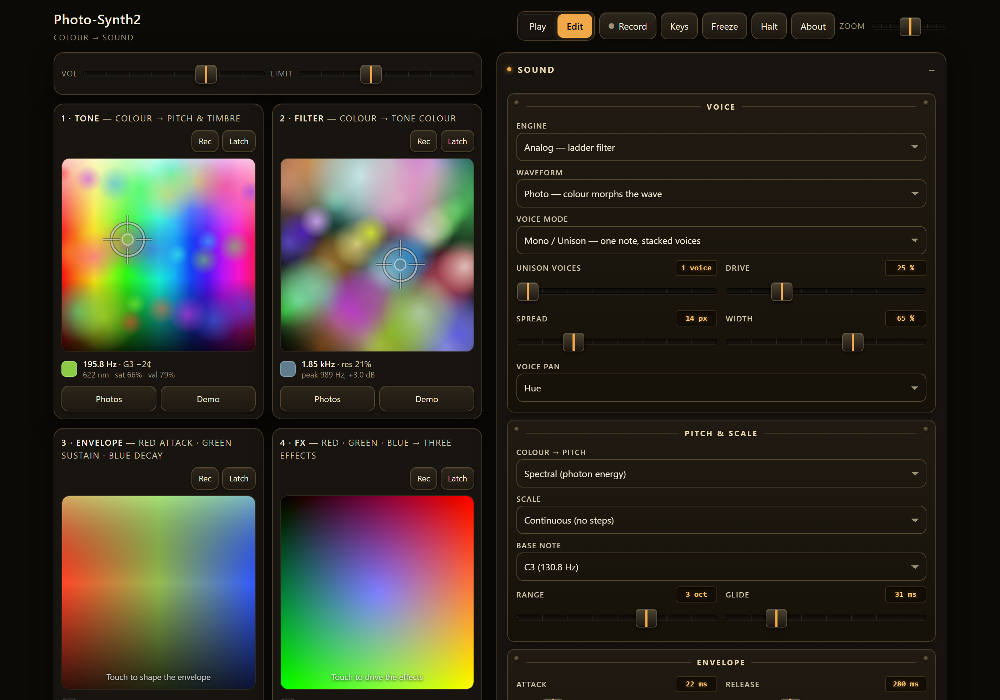

Do not rewrite the interface. Embed the original page in a JUCE
WebBrowserComponent and hand its JavaScript proxy objects with the same
shape as the Web Audio nodes it already uses — so node.gain.setTargetAtTime(v, t, 0.03)
keeps working, but marshals over a lock-free queue into a C++ engine. Look,
layout and logic are then identical by construction, because they are the
same code, and the engineering goes where it belongs: reproducing Web Audio
semantics exactly, and keeping the audio thread real-time safe.
A method, a set of templates and a set of scripts for porting a working browser audio app into a VST3 plugin that a musician cannot tell apart from the original — with the DSP rewritten in real-time-safe C++.
It is written to be driven by an AI coding assistant. The whole method is packaged as a loadable skill; you point Claude Code, ChatGPT or a VS Code chat extension at it, give it a prototype from a folder or a GitHub page, and it has the phases, the code templates and — most valuable — the list of traps that would otherwise cost a day each.
Markup, CSS, canvas drawing, gestures, app logic, panels, presets. Embedded in the plugin editor exactly as it was written.
Parameter proxies, voice-message translation, batching, an interpolated clock. A few hundred lines, spliced in by script.
Command queue, APVTS parameters, project state including embedded assets, file dialogs, offline rendering.
Oscillators, filters, voices, effects, mixing. No allocation, no locks, no logging, sample-accurate MIDI.
Everything follows from the top row. If you find yourself reimplementing a slider, a canvas or a layout rule in C++, you have taken a wrong turn: the fidelity you are trying to achieve was free a moment ago.
| Item | What it is |
|---|---|
| skill/html-to-vst3/ | The method as a Claude Code skill: SKILL.md plus nine short reference files, one per phase, read on demand. |
| skill/PROMPT.md | The same method as a portable system prompt for ChatGPT, Copilot Chat, a VS Code extension or a local model. |
| template/ | Working skeletons: CMakeLists.txt, an engine with Web Audio parameter and biquad semantics and a command FIFO, a processor with the bridge and state handling, a WebView2 editor, and the JavaScript proxy layer. |
| tools/ | Six PowerShell scripts: toolchain check, bridge splice, headless UI probe, screenshot capture, PDF manual rendering, release packaging. |
One time, about an hour, mostly downloading. All free, no developer account, no plugin SDK licence.
| Component | Version used | Notes |
|---|---|---|
| Visual Studio Community | 2026 (18.9) | Only the Desktop development with C++ workload is required. 2022 also works. |
| CMake | 4.4.2 | 3.22+ suffices. Tick “add to PATH”. |
| JUCE | 8.0.13 | Source only, cloned once and shared by every project. |
| WebView2 runtime | 151.x | Already on current Windows; only needed if the editor is blank. |
| Chrome or Edge | any | For headless probes, screenshots and rendering manuals to PDF. |
VST3 needs no separate Steinberg SDK — JUCE ships the headers.
git clone --depth 1 --branch 8.0.13 https://github.com/juce-framework/JUCE.git C:\AudioDev\JUCEpowershell -ExecutionPolicy Bypass -File tools\check-toolchain.ps1
.vst3 folder appears, the machine is ready.Always out of tree, always Release — a Debug plugin is slow enough to glitch in a DAW.
cmake -S C:\b\MyPlugin -B C:\b\MyPlugin\build -G "Visual Studio 18 2026" -A x64
cmake --build C:\b\MyPlugin\build --config Release
Artefacts appear under
build\<Target>_artefacts\Release\VST3\ and
...\Standalone\.
A VST3 “file” is really a folder; copy the whole bundle into
C:\Program Files\Common Files\VST3\<Vendor>\ and rescan in
the DAW.
.old, copy the new one in, delete the old later. And a host maps
a plugin once per session: after updating, restart the DAW. Removing
and re-adding the device is not enough.PLUGIN_CODE and PLUGIN_MANUFACTURER_CODE are four
characters each, and together they generate the VST3 class ID that projects
store. Two plugins sharing them are indistinguishable to the host. Choose
them once, and never change them after release. Building a variant
alongside an existing plugin? Change the code (Psyn →
Psy2) and the product name.
Keep the project path short — C:\b\MyPlugin. Deeply nested
paths hit MSVC's path-length limit during JUCE builds.
Work in this order, and build after every phase. Each phase has a short reference file in the skill; read the one you are in.
| Phase | What happens |
|---|---|
| 0 · Set up | Toolchain installed and verified by a build. 00-setup.md |
| 1 · Recon | Read the entire prototype. Inventory every audio node, parameter, worklet message and browser-only feature. Decide, in writing, what cannot come across. 01-recon.md |
| 2 · Bridge | Proxy objects in JS, a command FIFO in C++. First milestone: the original page renders inside the plugin window. 02-bridge.md |
| 3 · DSP | Port worklets line by line; reproduce Web Audio node semantics exactly. 03-dsp-parity.md |
| 4 · Real-time safety | Preallocate, never lock, never log, keep MIDI sample-accurate. 04-realtime-safety.md |
| 5 · Host integration | Automatable parameters, full project state including assets, sensible behaviour with the editor closed. 05-host-integration.md |
| 6 · Verify | Headless probe, Release build, screenshot of the running plugin, then a DAW. 06-verification.md |
| 7 · Package | Zip with the bundle as a folder, a PDF manual, a readme, and an honest parity document. 07-packaging.md |
Read the prototype end to end — all of it, including the worklets. This is
the phase people skip and then regret, because the whole method rests on
keeping code you did not read, and you can only do that safely once you know
exactly where the audio boundary is. While reading, mark: where the graph is
built (usually one function), where parameters are pushed, every
registerProcessor, every postMessage shape,
anything scheduled ahead of time, and everything the browser provides that a
plugin does not.
Then write the inventory: a table of node type → count → native
equivalent, and a numbered list of every parameter the UI writes to. Those
numbers become the wire protocol — an enum in
Engine.h mirrored by an object in bridge.js. Keep
them in the same order and never renumber one without the other.
prompt()/confirm() are suppressed —
route those through native dialogs and defaults. localStorage
and IndexedDB do work, but they live in the plugin's own
profile, not in the DAW project: anything the user expects to survive a
project reload must go through getStateInformation. Write all
of this down in docs/feature-parity.md as you go.The bridge lets the prototype's own JavaScript keep running untouched while the sound is made in C++. Everything else in this kit is ordinary plugin engineering; this is the part that makes 1:1 fidelity cheap.
// original page (unchanged) bridge (JS) C++
g.master.gain mkParam(ctx, PID.master) NativeParam[pMaster]
.setTargetAtTime(v, t, 0.03) → NB.send({k:"p", i, m:1, …}) → Command{setParamTarget}
→ lock-free FIFO
voice.port.postMessage( NVoice.postMessage Voice::setField
{type:"params", p:{…}}) → NB.send({k:"v", v, f:[…]}) → Voice::addEvents
| Proxy | Stands in for |
|---|---|
mkParam(ctx, id) | An AudioParam: value, setValueAtTime, setTargetAtTime, linearRampToValueAtTime, cancelScheduledValues. |
| node stubs | Gain, delay, panner and so on — whatever properties the page touches. connect() is usually a no-op, because the C++ graph is fixed and only the order of effects is data. |
mkBiquadProxy | A filter, including getFrequencyResponse(), which many prototypes use to draw a response curve. Implement it from the same coefficient formulas the engine uses, so the drawn curve matches what you hear. |
NVoice(ctx, i) | An AudioWorkletNode: a .port.postMessage() that translates the worklet's message protocol into voice field and event messages. |
Promise.resolve().then(flush)) so that is one IPC message,
not two hundred.currentTime
for scheduling. The engine pushes {t, fs} about thirty times
a second; add performance.now() since the last push so time
advances smoothly between them.One POD Command struct through a
juce::AbstractFifo, drained at the top of
processBlock. The message thread writes, the audio thread reads,
never the reverse. Bulk payloads — an event schedule of thousands of items —
travel by pointer: the audio thread copies them and sets an atomic
consumed flag, and the message thread frees them on its next
timer tick. Never delete on the audio thread.
Make the queue generous (65 536 entries) and have the push retry briefly rather than drop. Applying a preset bursts thousands of commands at once, and a dropped command is a wrong parameter value forever.
You will replace a handful of named functions in the page — the ones that
build the audio graph. Do it with a script that cuts between markers
(tools/splice-bridge.ps1), keeping the replacement bodies in
separate files. Then updating the prototype is a re-run, not a re-port.
Treat the Web Audio API as a specification you must reproduce, not an approximation you are free to improve. Every place you “do it better” is a place the plugin stops sounding like the prototype.
An AudioWorkletProcessor maps almost directly onto a C++
class. Keep the same variable names so the two can be diffed, the same
constants — do not round them — the same order of operations including where
clamps happen, and the same state layout. Keep JavaScript's
double precision for state; use float only at the
buffer boundary.
A worklet's process() runs once per 128-sample quantum, so
anything computed at the top of it updates at about 375 Hz, not per sample.
Move that per-sample “for accuracy” and you change the sound: smoothing
coefficients, LFO steps and drift walks all shift. Replicate it:
if (blockCounter == 0) {
// everything the worklet computed once per process() call
drift = clamp (drift * 0.9985 + (rand01() - 0.5) * 0.02, -1, 1);
lfo += 6.2831853 * rate * 128.0 / fs;
blockCounter = 128;
}
--blockCounter;
| Node | What to reproduce |
|---|---|
setTargetAtTime | A one-pole exponential approach, not a ramp: per block, current += (target - current) * (1 - exp(-n / (tc * fs))). Values may be scheduled in the future, so a parameter needs a small time-ordered queue. |
BiquadFilterNode | Q is in decibels for lowpass and highpass (q = 10^(Q/20)) and linear for the rest; peaking gain is in dB. Clamp swept frequencies away from 0 Hz — at zero the biquad degenerates and the signal vanishes. |
StereoPannerNode | The stereo-input pan law is not the mono one. Use whichever matches how the prototype fed the node. |
ConvolverNode | normalize defaults to true, with a specific calibrated formula. Reproduce it, then load the impulse with normalisation off. |
WaveShaperNode | A curve over [−1, 1] with 4× oversampling. Apply the same transfer function inside a juce::dsp::Oversampling block. |
DynamicsCompressor | No exact public algorithm. Approximate it, and say so in the parity document. If it is doing musical work rather than catching peaks, replace it with something you can match on both sides. |
clamp(f, 20, fs*0.49) fixed it. Expect this class of bug:
the browser's silent safety rails are part of the specification you are
reproducing.Anything that must be reproducible — generated impulse responses, demo images — needs the same PRNG algorithm; a 32-bit LCG behaves identically in JavaScript and C++ and gives bit-identical results. Where the original used randomness for genuinely aleatoric things, any decent generator is fine. Copy the prototype's staging constants exactly: they are the difference between “the same patch” and “the same patch but 4 dB louder and clipping”.
When something is wrong, suspect in this order: Q units, a missing clamp, per-block versus per-sample cadence, gain staging, smoothing constants.
A 128-sample buffer at 48 kHz is 2.7 ms. Miss it and the user hears a
click. Forbidden in processBlock and anything it calls:
allocation or deallocation of any kind (including juce::String,
growing a std::vector, assigning a std::function),
locks, file or network I/O, logging, calls into the WebView, and unbounded
loops. Allocate everything in prepareToPlay, which runs on the
message thread with audio stopped.
Split each block into short sub-blocks (32 samples) so parameter smoothing and scheduled events land close to their true time without per-sample overhead; handle note events sample-accurately inside the voice against an absolute frame counter.
int overflowing to negative turns
& mask into an out-of-bounds read after a few hours.prepareToPlay can be called
again with a new sample rate while state exists. Keep atomic shadow
copies of every parameter and restore from them, or changing the rate in
the DAW silently resets the patch.Expose the sliders a user would automate, in the slider's own
units so the automation lane reads like the interface. Handle both
directions: when the page moves a control, mirror it to the host with
setValueNotifyingHost (guarded by a suppress flag so it does not
bounce); when the host moves a parameter, record the id as dirty in
parameterChanged — which can arrive on the audio thread — and
push it to the page from the editor's timer, letting the page's own handler
update the readout, the curve and the sound.
With the editor closed there is no page. Reimplement those value mappings natively for the parameters that can work headless, and list the ones that genuinely cannot in the parity document rather than pretending.
getStateInformation must capture everything needed to
reproduce what the user hears and sees: the parameter tree, an engine
snapshot, and the page's own preset blob — with assets. Let the page produce
a compact copy of each image (a ≤640 px JPEG data URL is tens of kB, enough
for both display and sampling) and push it on a debounce; the processor
stores the blob opaquely and hands it back when an editor appears. Never
restore a held note: filter gate fields out, or a reopened project starts
screaming.
Long operations — offline rendering, image decoding — belong on a
ThreadPool with the result returned via
MessageManager::callAsync. For an offline render, instantiate a
second private engine; never reuse the live one.
There is no test suite for “does it look and sound like the prototype”. Build one from three cheap, repeatable checks.
The bridged page still runs in a plain browser, because every bridge call
is wrapped in try/catch. Load it in headless Chrome with a stub
backend, drive it with synthetic pointer events, and assert on the DOM —
three seconds, no build required. Every run should confirm: no JavaScript
threw, the controls hold the values you expect, canvases have non-black
pixels where content belongs, and a simulated drag produces a sane readout
and a burst of bridge messages. tools/probe-ui.ps1 does this.
cmake --build build --config Release 2>&1 | Select-String "error|warning C4|-> C:"
Launch the standalone, screenshot the window, and compare it with the original page — fonts, spacing, colours, toggle states, plausible readouts. This is what catches “the resource provider is serving a stale copy” and “the theme is subtly wrong in WebView2”. Then load it in a DAW for the things only a host can exercise: MIDI timing, automation, project save and reload, opening and closing the window repeatedly, and CPU with everything on.

For deterministic paths, render the same short sequence from the prototype
(OfflineAudioContext → WAV) and from the plugin's offline render,
then compare peak, RMS and spectral centroid. A constant offset points at
gain staging; a brightness difference points at filter Q units or a missing
clamp.
Every one of these cost real time on the reference port.
| Symptom | Cause and fix |
|---|---|
| Editor is blank | WebView2 runtime missing, or the user-data folder is not writable. Point it at %APPDATA%\<Vendor>\<Product>. |
prompt()/confirm() do nothing | Suppressed. Wrap in try/catch, supply a default, make destructive actions immediate with a toast. |
| Download links do nothing | A WebView cannot download. Read the Blob with FileReader and save through a native FileChooser. |
| Dropdowns unreadable | Native <select> popups take the page's text colour on a system background. Style select option explicitly. |
| Symptom | Cause and fix |
|---|---|
No stdout from --dump-dom | In restricted shells the call operator returns nothing. Use Start-Process -RedirectStandardOutput and read the file. |
| “Multiple targets are not supported” | An argument containing a comma (--window-size=1400,900) was split and the remainder read as a second URL. Pass the command line as one quoted string. |
--screenshot “Access is denied” | Lingering headless instances. Give each run its own --user-data-dir and kill strays between batches. |
| Blank canvas in the capture | The page draws on requestAnimationFrame. Allow real time: --virtual-time-budget plus a setTimeout. |
| Stray blank page in the PDF | A full-bleed cover exactly the page height. Make it 2–3 mm shorter. |
| Symptom | Cause and fix |
|---|---|
| A function silently does nothing | You assigned to $args — an automatic variable. Rename it. |
| A multi-line commit message is mangled | Here-strings passed to native commands are re-parsed. Write to a file and use git commit -F. |
| Em dashes become mojibake | Save scripts as UTF-8 with BOM, and use [IO.File]::ReadAllText/WriteAllText with explicit encoding instead of Get-Content -Raw/Out-File. |
| Symptom | Cause and fix |
|---|---|
| “Being used by another process” | The DAW holds the DLL. Rename the loaded binary to .old, copy the new one in. |
| DAW still shows the old build | A host maps a plugin once per session. Restart the DAW. |
| Two plugins collide | Same plugin + manufacturer code. They form the class ID. |
| A swept filter goes silent | Biquad driven to 0 Hz. Clamp to ≥ 20 Hz. |
| Filters all the wrong width | lowpass/highpass take Q in dB. |
| Reverb wildly wrong level | ConvolverNode normalises by default. |
| Clicks on a setting change | A value applied per block. Smooth it, and land graph changes under a ~60 ms master dip. |
| Patch resets on sample-rate change | prepareToPlay re-ran and reset the DSP. Restore from shadow copies. |
The method is packaged so an assistant can follow it: one entry file that fits in context, and nine short references it reads only when it needs them.
Copy the skill folder into your project or user profile:
<project>\.claude\skills\html-to-vst3\ (this project only) %USERPROFILE%\.claude\skills\html-to-vst3\ (every project)
It then appears as /html-to-vst3, and is offered
automatically when you ask for a prototype to be turned into a plugin.
Paste skill/PROMPT.md as the system or custom instruction and
attach the references/ files — or paste the relevant one at the
start of each phase. The content is identical; only the packaging differs.
The opening request that works:
Then let it work phase by phase, and hold it to the rules: build after every phase, never edit the reference prototype, never guess at DSP maths, and say plainly what could not be ported. Decide two things yourself early — the product name, and the four-character plugin and manufacturer codes, which must be unique and must never change after release.
HTML → VST3 Developer Kit · Brokild Apps · August 2026. Written
alongside a real port: Photo-Synth 2, a four-photo browser
instrument turned into a VST3 with its interface unchanged. Kit and example:
github.com/peterboggild/BrokildApps.
Use it freely. It documents one route that worked, not the only one — if something here is wrong for your prototype, trust your prototype.
Peter Bøggild, August 2026.